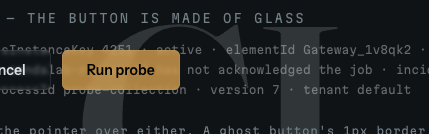

The hairline survives
.sl-invert re-derives --slc-border from its own
foreground on its children, so a bordered component placed
inside keeps a visible edge with no work from the author.
Design language · Family-resemblance reference · PoC (not delivered)
One grammar, many products.
Every Sondalab surface shares the same materials — type roles, spacing scale, hairline structure, motion, voice — and spends its distinctiveness on composition and a single accent hue. Switch the theme and accent above: the grammar holds; only the hue moves.
See it in real product screens, measured live IDE · settings · data · site, with the Lumen target overlay
Display --sl-font-display Geist 600 · Sans --sl-font-sans Geist · Mono --sl-font-mono Geist Mono · Brand --sl-font-brand Fraunces, the wordmark and monogram only · Pixel --sl-font-pixel Geist Pixel Square, display numerals, the lockup and one display word, whole-cell sizes only
Running text is capped at roughly sixty-three characters so a line stays comfortably readable — the measure convention, defined locally rather than as a token because it is layout-level. Beyond this width prose loses the reader between the end of one line and the start of the next.
Hairline-grid: gap:1px over --sl-border-subtle, cells paint --sl-bg-surface. Sections separated by a 1px top rule + mono index; gutter ruler on wide viewports.
The page ground — --sl-bg-canvas.
Card base, one step up — --sl-bg-surface.
Floating widgets — --sl-bg-surface-raised.
The recurring parts that carry the family look. Each uses the active accent.
Section eyebrow
Eyebrow — mono uppercase micro-label above a heading.The thesis
Family resemblance is shared materials; surprise is per-screen composition.
# real content, not filler resolve("q-8f2a") → cached · 0ms resolve("q-11c7") → miss · 340msReal-content block — actual output on the ink surface.
The shipped .sl-* classes from @sondalab/ui-kit/components.css. Colour comes from role-vars (--slc-*) that resolve to the active theme accent — switch theme / accent above and the whole gallery follows.
Cached probe answers return in 0ms; a miss re-runs the tool and stores the result.
A probe id, or a resolve() call.
Six hex digits — this one has four.
Paints its own surface.
The gap is the rule.
No border is doubled.
The audit found nothing to report.
4 surfaces read, 0 R-violations, 0 blessed deviations.

Running text is capped at the ~63ch measure, which is what .sl-prose carries. The gutter beside it is .sl-wrap: a fluid clamp, not a token, because the value is not fixed. Scroll this box and the header above stays put, translucent over whatever passes beneath it.
A section opens with a mono index beside its heading and is separated from the one before it by a single 1px rule. Number it only where the content is a real sequence.
The header reads --slc-canvas at 84% with a backdrop blur, so the page ground is what shows through it. That role-var is the one addition this release makes.
Note
Accent measure-tick on the top edge — a ruler mark, not the usual left stripe.
Warning
Semantic hue is independent of the product accent.
| Probe | Result | Latency |
|---|---|---|
| q-8f2a | cached | 0ms |
| q-11c7 | miss | 340ms |
| q-4d90 | cached | 1ms |
One easing --sl-motion-ease, three speeds. Entrance = staggered rise (the cards in §03 rose in on load). Zeroed under prefers-reduced-motion via the token layer.
The Term spec (docs/tui-patterns.md) as painted output in .sl-term-block: six role spans paint the terminal roles from the theme's own inks, the spinner runs in CSS alone under prefers-reduced-motion: no-preference, and every block is the catalog's, verbatim.
prompt ok warn err dim accent ✓ done + ok ✓ fixed + ok ✗ failed x err ! warn ! warn ● active * prompt ○ pending . dim ↷ skipped - dim ? question ? prompt · separator | dim
✓ Check git repository clean, on main ✓ Install pre-commit hook fixed ! Check signing key not loaded ✗ Verify remote origin unreachable Summary 1 ok · 1 fixed · 1 warn · 1 failed
✓ Installed hook .git/hooks/pre-commit Next: smartctx doctor --fix
✗ Could not reach origin git ls-remote timed out after 10s (exit 128) Try: git remote -v · sondalab.eu/e/T102
✗ Unknown flag --versoin Did you mean --version?
? Install the hook into ~/.config/git? [y/N]
? Delete probe q-8f2a? [y/N] ? Type q-8f2a to delete it permanently:
Resolving 128 probes…
███████████▓▒░ 61/128 48%
▓▒░ 0/128 0% ████████████████████████ 128/128 100%
Resolving 128 probes…
● Resolving 128 probes… ✓ Resolved 128 probes 2.1s
! Value changed sh▓ ▞#░▒%█▚ frame 1 · 60ms ! Value changed sha 9▒▚░@▞▓ frame 2 · 120ms ! Value changed sha 9c41▞%░ frame 3 · 180ms ! Value changed sha 9c41e0b frame 4 · 240ms, settled was sha 3f02a7d · re-resolved after cache miss
╭─ PROBES ─────────────────────╮╭─ DETAIL ────────────╮ │ ID STATE AGE ││ q-8f2a │ │▌q-8f2a ✓ ok 2m ││ resolved in 1.2s │ │ q-71c0 ● live 12s ││ cache hit │ │ q-0d9e ✗ err 5m ││ │ ╰──────────────────────────────╯╰─────────────────────╯ ↑↓ move · enter open · / filter · : command · ? help · q back · ctrl-c quit
ID STATE AGE q-8f2a ✓ ok 2m q-71c0 ● live 12s q-0d9e ✗ err 5m
? Open which probe? Type a number, then Enter 1 q-8f2a ok 2 q-71c0 live 3 q-0d9e err > 2